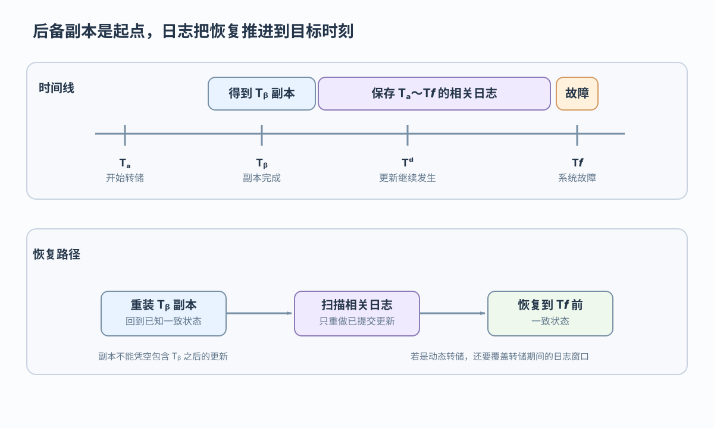
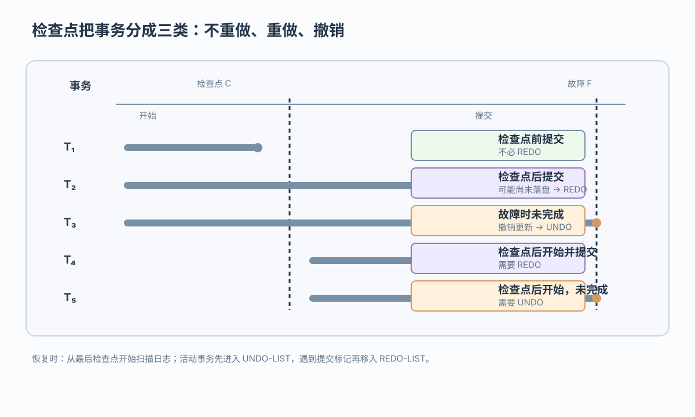
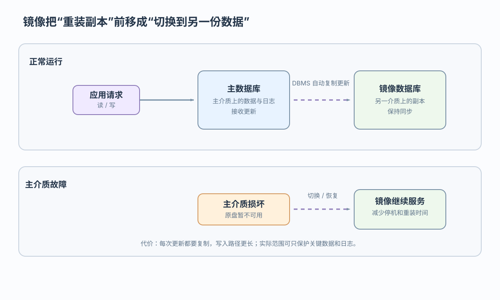

日志先写
日志已稳定保存而数据页尚未写入，恢复仍有依据；具体按事务状态执行 UNDO 或 REDO
用副本、日志、检查点和镜像缩短恢复路径
 VER. 2608.2
Built with impress.js
VER. 2608.2
Built with impress.js
完成本节后，你应该能够
要恢复到故障前状态，还需要转储后的更新日志

转储副本 → 重装 → 日志中的已提交更新 → 故障前一致状态
不能。副本只提供恢复起点；动态转储或副本含未完成事务时，还要结合日志按状态执行 UNDO 和 REDO
先判断转储时是否允许并发，再判断复制全部数据库还是只复制变化部分
| 海量转储 | 增量转储 | |
|---|---|---|
| 静态转储 | 无并发写入，副本一致；复制全部数据库 | 无并发写入；只复制变化部分 |
| 动态转储 | 允许并发写入，需要日志校正全部副本 | 允许并发写入；需要基础副本、变化链和日志窗口 |
静态／动态描述运行状态，海量／增量描述复制范围；两个维度可以自由组合
日志让恢复系统知道应撤销哪些更新或重做哪些更新
| 日志信息 | 说明 | 恢复用途 |
|---|---|---|
| 事务标识 | 哪个事务的操作 | 分类事务状态 |
| 开始与结束 | BEGIN、COMMIT 或 ROLLBACK | 判断是否完成 |
| 操作对象 | 插入、删除或修改对象 | 定位更新 |
| 旧值与新值 | 更新前后数据 | 执行 UNDO 或 REDO |
<T1, UPDATE, Account[A], old=100, new=90>
块级日志会保存受影响数据块的前后内容；插入或删除时旧值、新值可能有一侧为空，记录级日志更容易直接说明“哪个事务改了哪个对象”
WAL 要求日志稳定后，相关数据页才可写入稳定存储
日志已稳定保存而数据页尚未写入，恢复仍有依据；具体按事务状态执行 UNDO 或 REDO
数据页已写而日志未稳定保存，故障后可能无法可靠解释该修改
不可以。WAL 先稳定保存恢复证据，再允许数据页落盘；提交确认还需要提交记录稳定保存
副本提供起点，日志按事务状态补齐或撤销更新
| 事务状态 | 队列 | 动作 |
|---|---|---|
| 事务故障：未完成事务 | 相关日志 | 反向应用旧值执行 UNDO |
| 系统故障：未完成／已提交事务 | UNDO-LIST／REDO-LIST | 未完成 UNDO，已提交 REDO |
| 介质故障：原介质不可信 | 可信副本与相关日志 | 重装副本后按动态转储窗口和事务状态执行 UNDO／REDO |
动态转储的介质恢复需要区分未完成事务和已提交事务；转储期间的未完成事务可能仍需 UNDO
恢复不必每次从日志文件开头扫描
检查点不是单纯的时间标签，而是一组已按顺序落盘的恢复证据和一个可定位的日志地址
检查点保存活动事务状态，重新开始文件保存日志地址
| 对象 | 保存什么 | 恢复时怎么用 |
|---|---|---|
| 检查点记录 | 活动事务及最近日志地址 | 建立初始事务队列 |
| 重新开始文件 | 检查点在日志中的地址 | 找到最后检查点 |
| 日志后续记录 | 新事务和提交标记 | 更新 UNDO／REDO 队列 |
从检查点向后扫描：新事务先进入 UNDO；遇到 COMMIT 后移入 REDO，扫描结束后先执行 UNDO，再执行 REDO
恢复动作要同时看事务提交时刻、最后检查点和故障位置

修改已在检查点建立前或建立时写入数据库，不必 REDO
修改在故障时可能尚未落盘，需要 REDO
事务未完成，必须撤销，需要 UNDO
不能。要从最后检查点正向扫描：新事务先进入 UNDO，遇到 COMMIT 后移入 REDO，最后先 UNDO 再 REDO
介质故障时可以缩短停机和重装时间，但不提供历史版本

它把另一份当前数据放在不同介质上；镜像仍然一致且可用时，主介质损坏后可以继续服务，减少重装副本的停机时间
镜像保存另一份当前数据，不保存多个历史时点。错误更新通常也会被复制，因此仍需后备副本和日志保留恢复时点；并发控制仍负责并发隔离
通常只为关键数据和日志建立镜像
| 方面 | 镜像收益 | 镜像代价 |
|---|---|---|
| 介质故障 | 可由另一介质继续服务 | 需要额外存储 |
| 恢复速度 | 减少重装和停机 | 依赖镜像仍一致且可用 |
| 并发读取 | 镜像可读且一致性策略允许时可分担读压力 | 复制写入会增加开销，具体取决于同步方式 |
| 范围选择 | 保护关键数据和日志 | 全库镜像成本更高 |
不能。镜像解决当前数据的可用性和切换速度；历史恢复仍依赖后备副本与日志
可靠恢复是一条由副本、日志、检查点和镜像组成的证据链
副本提供可信的恢复起点
日志按 WAL 记录更新前后状态，支撑 UNDO／REDO 队列
检查点记录恢复位置，缩短日志搜索范围
镜像在介质故障时减少停机
恢复链是：副本提供起点 → 日志补齐更新 → 检查点缩短搜索 → 镜像缩短停机；镜像不等于历史备份